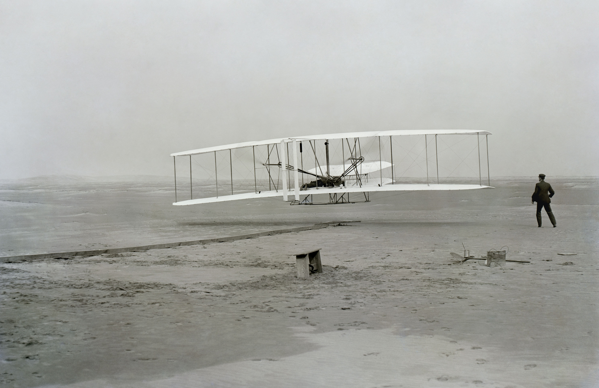
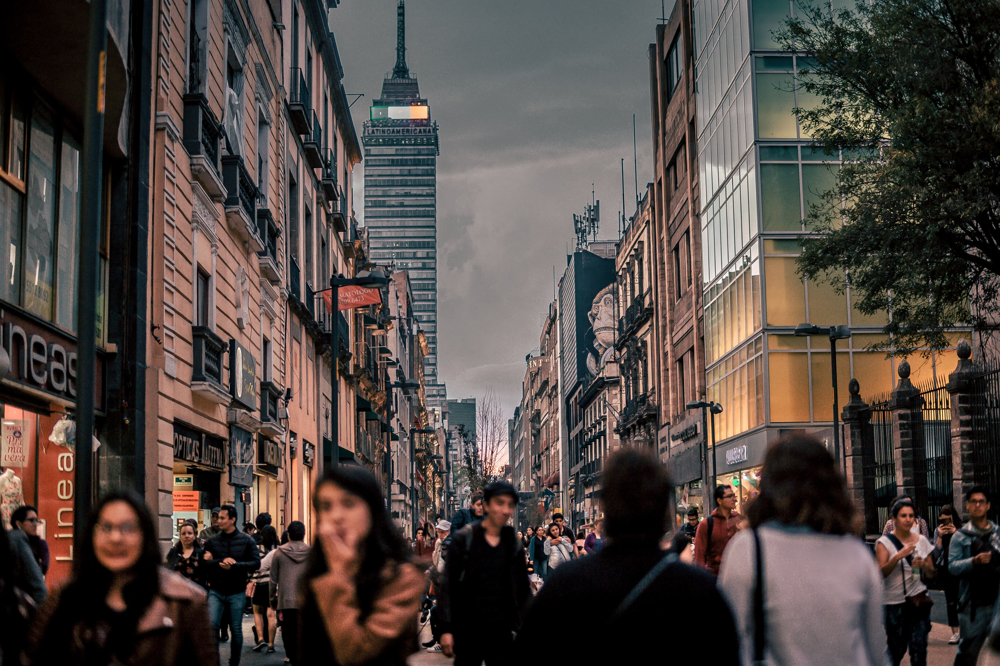
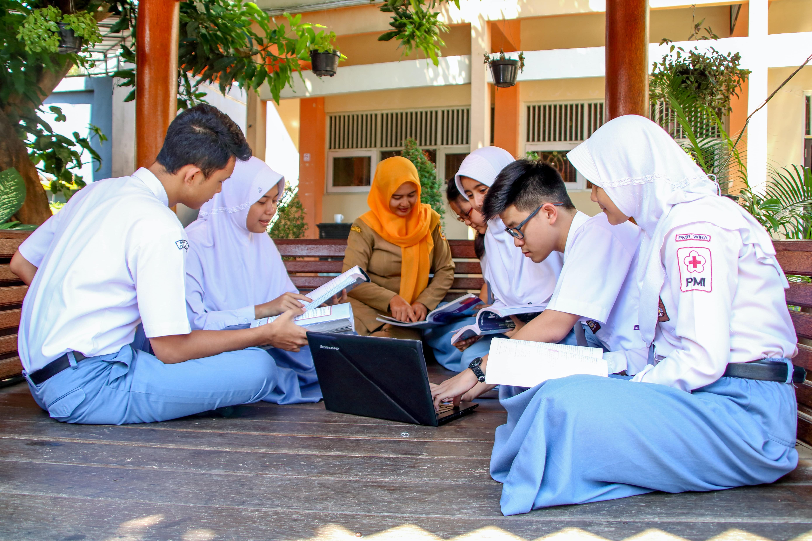
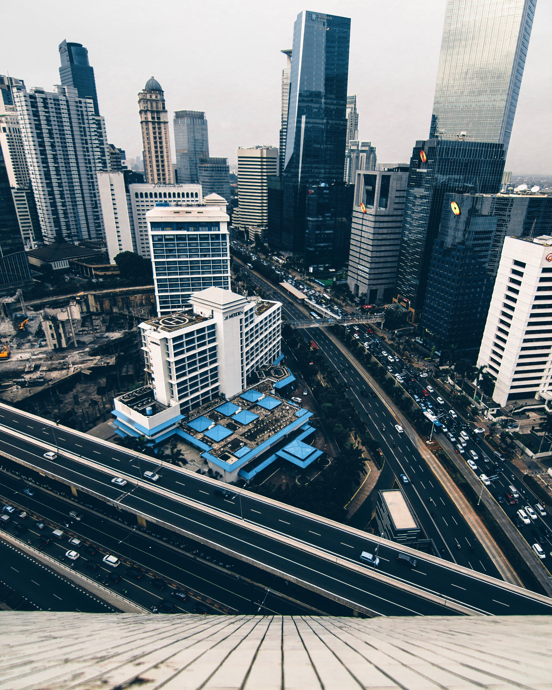
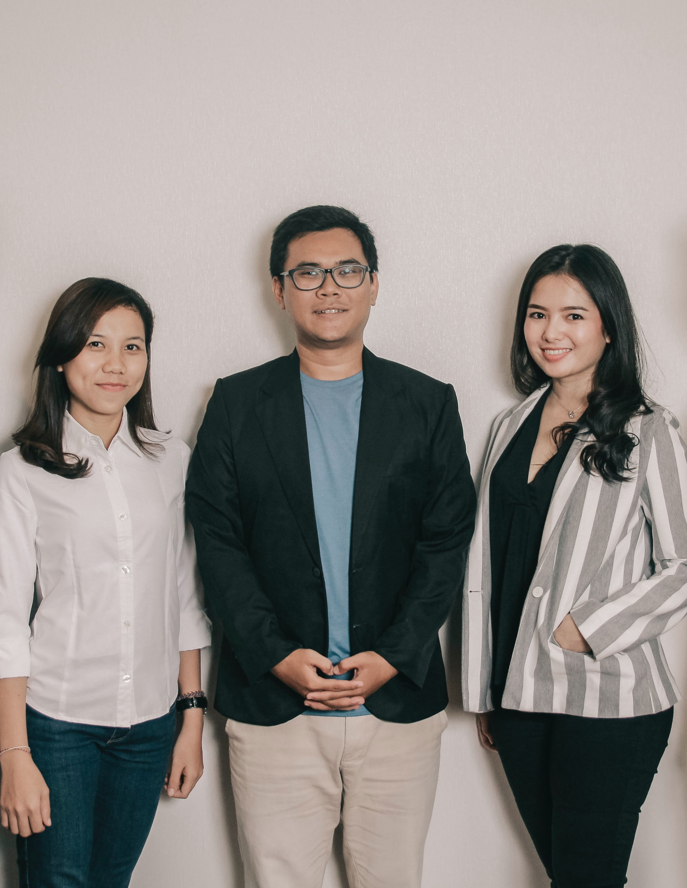

PERKEMBANGAN
Mencapai Kemudahan
Dahulu kala, semua aktivitas manusia baik aktivitas yang ringan maupun
yang berat masih dilakukan secara manual. Manusia memimpikan segala
sesuatu menjadi lebih mudah, praktis dan efisien
Atas dasar keinginan ini, manusia terus mencari dan menciptakan
solusi-solusi efektif, yang disebut sebagai teknologi.

Perkembangan Teknologi
Teknologi mulai berkembang pesat pada abad ke-18, yang ditandai dengan
penemuan mesin uap. Perkembangan teknologi berlanjut saat penemuan
energi listrik di awal abad ke-20, dan semakin berkembang pesat ketika
penemuan komputer.
Pada awal abad ke-21, terjadi penggabungan teknologi otomatisasi
dengan teknologi siber. Dengan penggabungan ini, banyak inovasi baru
yang hadir untuk membantu kehidupan manusia.
Tak Pernah Berhenti
Waktu demi waktu berlalu, teknologi tak berhenti berkembang. Teknik
yang baru dikembangkan, teknik yang lama ditinggalkan.
Pada era ini, teknologi menguasai seluruh kehidupan manusia. Era
inilah yang kita sebut sebagai era digital.
Era digital berjalan terus menerus tanpa henti. Hingga saat ini,
inovasi-inovasi masih dikembangkan, demi mencapai kemudahan terbesar.

ERA DIGITAL 4.0
Saat ini, dunia masih berada pada era digital 4.0. Era ini merupakan era
yang ditandai dengan pertukaran data dan penerapan otomasi dalam
berbagai bidang kehidupan.
Manfaat yang paling dirasakan dari era digital ini adalah kemudahan
dalam memperoleh informasi. Melalui internet, manusia dapat mencari
informasi yang diinginkan dengan cepat dan mudah.
.png)
SOLUSI INDONESIA
Pemerintah harus mempercepat pembangunan infrastruktur di
daerah-daerah yang belum memiliki akses jaringan internet. Semakin
cepat pembangunan, maka semakin cepat masyarakat dapat mulai
memanfaatkan internet dalam kehidupannya sehari-hari.
Dengan adanya akses internet, masyarakat dapat mulai mencari informasi
bermanfaat yang akan menambah ilmu serta keterampilan mereka.

Faktor terpenting dalam memodernisasikan Indonesia adalah ketersediaan
sumber daya manusia (SDM) yang berkualitas. Pada era digital ini,
kemampuan berbahasa Inggris sangat diperlukan untuk menerima informasi
dari ruang lingkup seluruh dunia.
Selain itu, keahlian dalam bidang teknologi seperti coding,
programming dan teknik dapat membantu Indonesia menciptakan
inovasi-inovasi baru untuk masa depan.

Semakin banyak SDM yang berkualitas, maka semakin kecil resiko
terjadinya masalah. SDM berkualitas memiliki wawasan dan keahlian yang
meningkatkan mutu kerja.
Dalam kasus cyber security, keamanan data masyarakat dapat
ditingkatkan dengan semakin banyaknya analis keamanan yang memiliki
keterampilan kerja tinggi.
MENUJU ERA DIGITAL 5.0
Sanggupkah Indonesia?
Saat ini, Indonesia dapat dikatakan telah berada pada era digital 4.0,
meski masih terdapat beberapa masalah yang menghambat laju Indonesia.
Dengan kondisi seperti ini, sanggupkah Indonesia bergerak maju menuju
era digital 5.0?

Indonesia Bisa
Tentu, Indonesia sanggup, Indonesia bisa. Indonesia bisa menjadi
seperti negara-negara lain yang siap menyambut era digital 5.0.
Untuk menghadapi era baru ini, generasi muda adalah harapan terbesar
bangsa. Peran mereka sangat penting untuk mempelajari dan
mengembangkan teknologi-teknologi baru yang akan membantu masyarakat
Indonesia mencapai kemudahan terbesar dalam hidup.
Bangun Pemudi Pemuda
Para pemuda dan pemudi bangsa selaku SDM berikutnya akan menentukan
masa depan Indonesia. Dengan rajin belajar serta giat bekerja,
seseorang akan memiliki keahlian yang siap memajukan bangsa.
Mulailah menjelajah hal-hal baru, dan temukan ide cemerlang yang
mengubah dunia. Marilah bersama-sama membawa Indonesia menuju masa
depan yang sejahtera.
